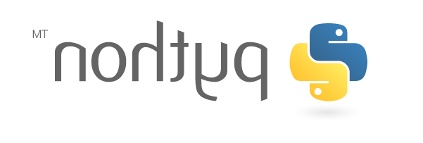
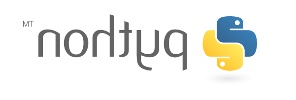

Manipulation d'images avec Python et stéganographie
Une première partie du projet permet de découvrir le module pil ((Python Imaging Library)) permettant de manipuler les images en Python. Ce module permet notamment d'interagir directement avec les pixels constituants une image. Cette fonctionnalité est utilisée dans la seconde partie du projet afin de dissimuler au sein d'une image une information, c'est ce qu'on appelle la stéganographie
Etape 1 : Prise en main de PIL (partie 1)
La prise en main du module pil s'effectue via un notebook :
- option 1 : utilisation directe dans Capytale :

- option 2 : téléchargement du notebook pour une utilisation locale Notebook PIL
Pour cette première étape, il faut faire les exercices 1 à 9 du notebook précédent
Etape 2 : Prise en main de PIL (partie 2)
Terminer le notebook précédent en faisant les exercices 10 à 13. A ce stade du projet, vous devez avoir compris comment :
- lire les informations de couleur d'une image pixel par pixel
- modifier ces informations
Etape 3 : Stéganographie
Remarques
Les étapes 3 et 4 sont difficiles mais indépendantes du reste du projet, en cas de difficultés on pourra passer directement à l'étape 5.
Comme vu dans le notebook, les informations de couleur d'une image au format RGB sont représentées pour chaque pixel par trois octets qui représentent les niveaux de rouge, de vert et de bleu. On obtient donc en tout \(256 \times 256 \times 256 = 16\,777\,216\), une variation minime des trois octets produira une différence de couleur à peine (ou pas du tout) perceptible par un oeil humain. L'idée est donc d'utiliser les deux derniers bit de chaque information de couleur afin d'y stocker une information, c'est le principe de la steganographie.
Comme on utilise les deux derniers bits de chaque octet de couleur la modification de couleur sera minime en effet ce sont les bits de poids faibles, ils valent respectivement \(2^0=1\) et \(2^1=2\). Comme on modifie 2 bits (sur les 8) de chaque couleur on peut donc stocker 6 bits d'information dans un pixel c'est à dire \(2^6 = 64\) codes différents. Cela est largement suffisant pour stocker les 26 lettres majuscules et le caractère espace. On convient du code suivant :
| Code (6 bits) | Valeur décimale | Caractère |
|---|---|---|
000000 |
0 | espace |
000001 |
1 | A |
000010 |
2 | B |
000011 |
3 | C |
| ....... | .... | ..... |
011010 |
26 | Z |
111111 |
63 | Fin de message |
Remarque
On n'utilise pas les codes de 27 (inclus) à 62 (inclus), ils pourraient représenter les chiffres, les lettres minuscules, les caractères de ponctuation, ...
Prenons un exemple, on veut dissimuler le caractère Z (code décimal 26 et code binaire 011010) dans le pixel de coordonnées \((0;0)\) et on suppose que ce pixel à pour valeurs de couleurs RVB : (156,191,211), on va donc :
- convertir 156 en binaire : \(156\)=\(\overset{\displaystyle{_{2^7}}}{\boxed{\strut1}}\overset{\displaystyle{_{2^6}}}{\boxed{\strut0}}\overset{\displaystyle{_{2^5}}}{\boxed{\strut0}}\overset{\displaystyle{_{2^4}}}{\boxed{\strut1}}\overset{\displaystyle{_{2^3}}}{\boxed{\strut1}}\overset{\displaystyle{_{2^2}}}{\boxed{\strut1}}\overset{\displaystyle{_{2^1}}}{\boxed{\strut0}}\overset{\displaystyle{_{2^0}}}{\boxed{\strut0}}\) puis on modifie les deux derniers bits en
01ce qui donne comme nouvelle valeur \(\overset{\displaystyle{_{2^7}}}{\boxed{\strut1}}\overset{\displaystyle{_{2^6}}}{\boxed{\strut0}}\overset{\displaystyle{_{2^5}}}{\boxed{\strut0}}\overset{\displaystyle{_{2^4}}}{\boxed{\strut1}}\overset{\displaystyle{_{2^3}}}{\boxed{\strut1}}\overset{\displaystyle{_{2^2}}}{\boxed{\strut1}}\overset{\displaystyle{_{2^1}}}{\boxed{\strut0}}\overset{\displaystyle{_{2^0}}}{\boxed{\strut1}}\) = \(157\) - convertir 191 en binaire : \(191\)=\(\overset{\displaystyle{_{2^7}}}{\boxed{\strut1}}\overset{\displaystyle{_{2^6}}}{\boxed{\strut0}}\overset{\displaystyle{_{2^5}}}{\boxed{\strut1}}\overset{\displaystyle{_{2^4}}}{\boxed{\strut1}}\overset{\displaystyle{_{2^3}}}{\boxed{\strut1}}\overset{\displaystyle{_{2^2}}}{\boxed{\strut1}}\overset{\displaystyle{_{2^1}}}{\boxed{\strut1}}\overset{\displaystyle{_{2^0}}}{\boxed{\strut1}}\) puis on modifie les deux derniers bits en
10ce qui donne comme nouvelle valeur \(\overset{\displaystyle{_{2^7}}}{\boxed{\strut1}}\overset{\displaystyle{_{2^6}}}{\boxed{\strut0}}\overset{\displaystyle{_{2^5}}}{\boxed{\strut1}}\overset{\displaystyle{_{2^4}}}{\boxed{\strut1}}\overset{\displaystyle{_{2^3}}}{\boxed{\strut1}}\overset{\displaystyle{_{2^2}}}{\boxed{\strut1}}\overset{\displaystyle{_{2^1}}}{\boxed{\strut1}}\overset{\displaystyle{_{2^0}}}{\boxed{\strut0}}\) = \(190\) - convertir 211 en binaire : \(211\)=\(\overset{\displaystyle{_{2^7}}}{\boxed{\strut1}}\overset{\displaystyle{_{2^6}}}{\boxed{\strut1}}\overset{\displaystyle{_{2^5}}}{\boxed{\strut0}}\overset{\displaystyle{_{2^4}}}{\boxed{\strut1}}\overset{\displaystyle{_{2^3}}}{\boxed{\strut0}}\overset{\displaystyle{_{2^2}}}{\boxed{\strut0}}\overset{\displaystyle{_{2^1}}}{\boxed{\strut1}}\overset{\displaystyle{_{2^0}}}{\boxed{\strut1}}\) puis on modifie les deux derniers bits en
10ce qui donne comme nouvelle valeur \(\overset{\displaystyle{_{2^7}}}{\boxed{\strut1}}\overset{\displaystyle{_{2^6}}}{\boxed{\strut0}}\overset{\displaystyle{_{2^5}}}{\boxed{\strut1}}\overset{\displaystyle{_{2^4}}}{\boxed{\strut1}}\overset{\displaystyle{_{2^3}}}{\boxed{\strut1}}\overset{\displaystyle{_{2^2}}}{\boxed{\strut1}}\overset{\displaystyle{_{2^1}}}{\boxed{\strut1}}\overset{\displaystyle{_{2^0}}}{\boxed{\strut0}}\) = \(210\)
On transforme donc les couleurs de ce pixel en (157,190,210), la modification est imperceptible et un caractère est dissimulé dans l'image.
En utilisant ce code vous devez retrouver le messsage caché dans l'image suivante :
Le message démarre au pixel de coordonnées (0,0), vous devez lire de gauche à droite et de haut en bas jusqu'à le code de fin de message.
Etape 4 : Dissimuler un message
Maintenant à vous d'inventer un code afin de dissimuler une information dans une image, cela peut être des caractères comme dans l'exemple précédent. Mais on peut aussi dissimuler une image au sein d'une autre image, voir par exemple le site bibmath pour un exemple de la méthode employée.
Aide
Pour sauvegarde une image à l'aide de pil on utilise <nom_image>.save(<nom_fichier>), vous devez utiliser un format d'image non compressée comme bmp (c'est à dire que le nom du fichier se termine par .bmp) lors de la sauvegarde afin que la compression ne modifie pas les informations de couleur de chaque pixel.
Etape 5 : Aller plus loin avec PIL
Ecrire et tester une fonction Python permettant à l'aide de pil de créer un "miroir" d'une image. Attention, il ne s'agit pas d'une rotation d'image. A titre d'exemple ci-dessous une image et son "miroir" en dessous, on ne doit pas utiliser une fonction qui existe déjà dans pil on doit créer le "miroir" simplement en manipulant les pixels de l'image de départ.
 

Créer un filtre classique applicable sur une image, par exemple un filtre de flou de pixellisation. On pourra consulter ce site pour un exemple de filtre de pixellisation. Attention, il ne faut pas utiliser un filtre déjà existant dans pil, le but est d'en créer un en utilisant exclusivement les fonctions de manipulation de pixels. Dans le cas du filtre de pixellisation, on fait la moyenne des carrés des informations de couleur d'un carré de l'image et on remplace l'ensemble des pixels de ce carré par cette moyenne. Plus la carré choisi est gros, plus l'image obtenue sera pixellisée.